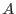

smoothstyle=`simple', convolverstyle=`squarebox'.
This simple convolver is a square array of side equal to (the integer part of width) and value specified by , which is calculated as in the previous two sections.